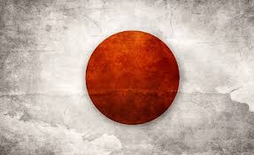

Tokio oficialmente Metrópolis de Tokio, es la capital de facto de Japón, ubicada en el centro este de la isla de Honshu, concretamente en la región de Kanto.
En conjunto es una de las 47 prefecturas de Japón. Es el centro de la política, economía, educación, comunicación y cultura del país.
